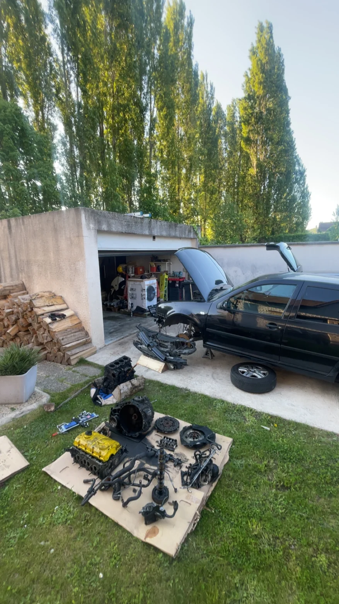
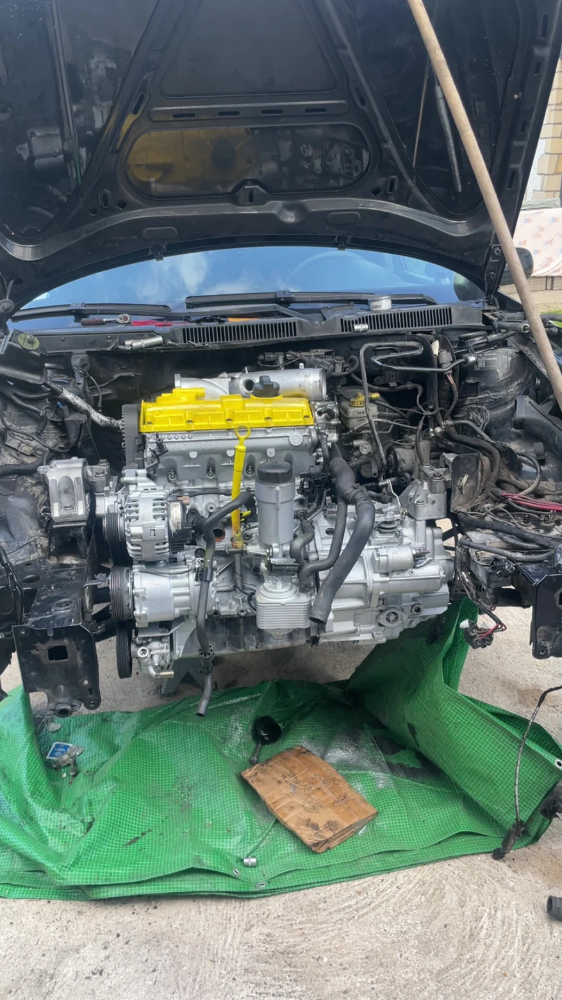

← Retour aux centres d’intérêt
Centre d’intérêt / Projet mécanique personnel
Golf IV TDI
J’ai sorti le moteur de ma Golf IV TDI pour le refaire entièrement : une réalisation personnelle exigeante, loin des écrans.

Le contexte
Ce projet est né de mon intérêt pour la mécanique automobile et de mon envie de comprendre concrètement le fonctionnement d’un moteur diesel.
Mon travail
- Dépose complète du moteur du véhicule.
- Réalisation personnelle de la remise en état complète du moteur.
- Remontage du moteur à l’issue des travaux.
- Documentation photographique des principales étapes du projet.
Galerie & démonstrations
Trois photographies authentiques documentent la dépose, les opérations sur le moteur et son repositionnement.



